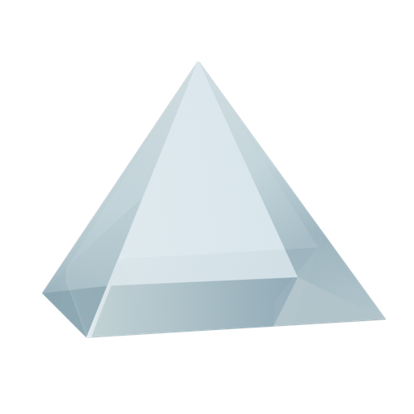
Drag to turn · Click to switch the light
01
See the web in a new light
Prism
Mac · Windows
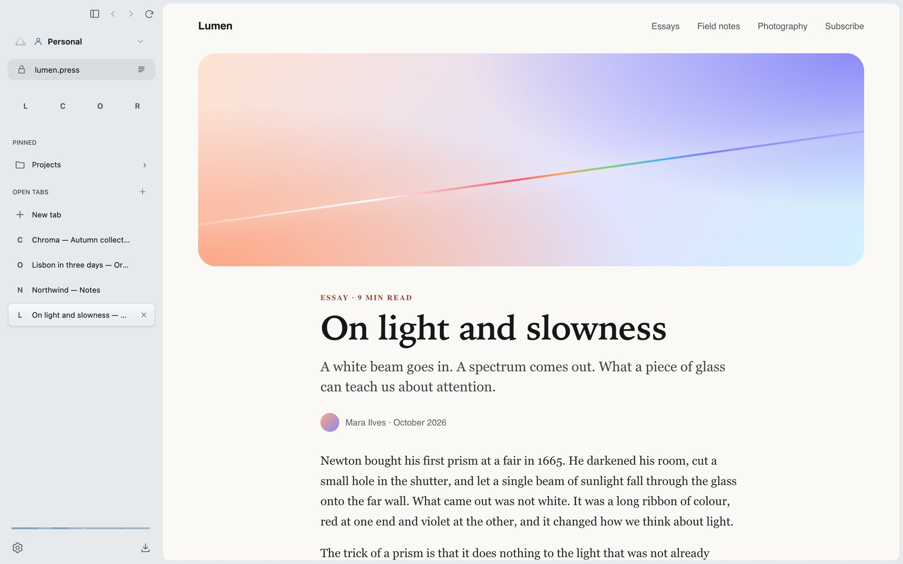
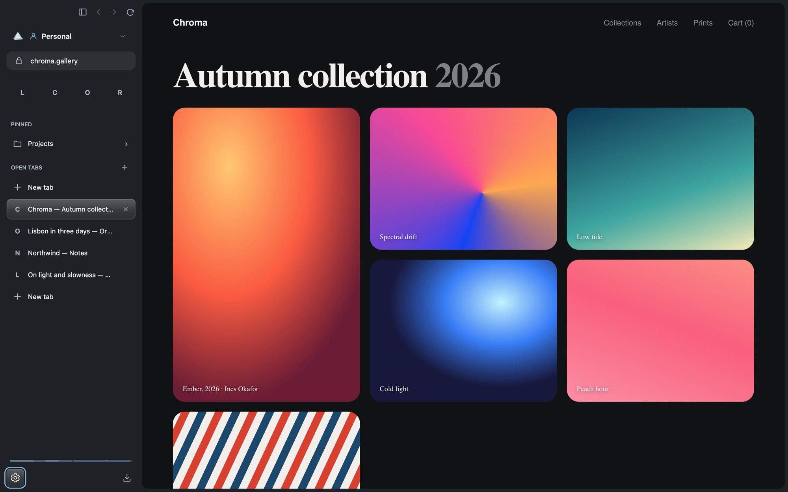
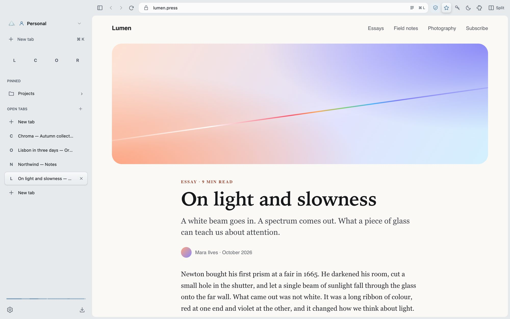
02
Nothing
in the way
4h 20m
Today · +25m vs usual
- ↑Longest focus 1 h 10 m
- ≈Busiest hour 11 AM
MTWTFSS
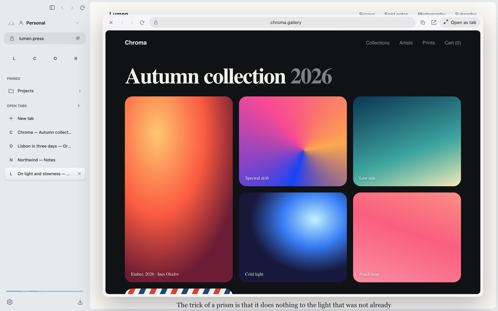
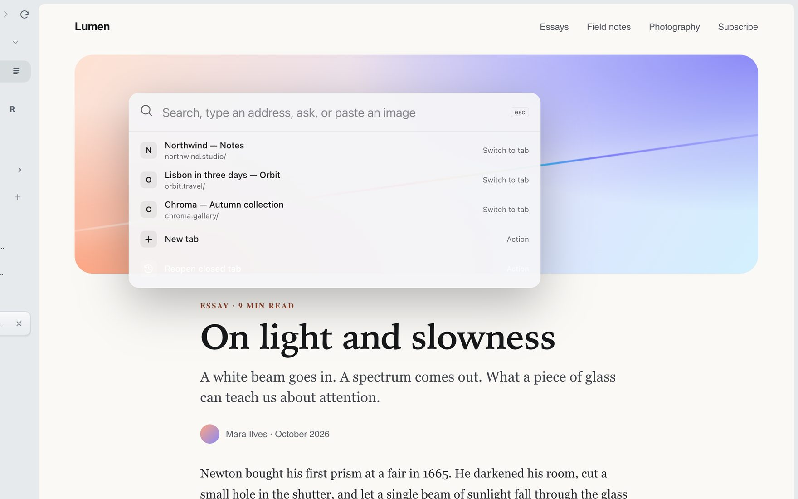
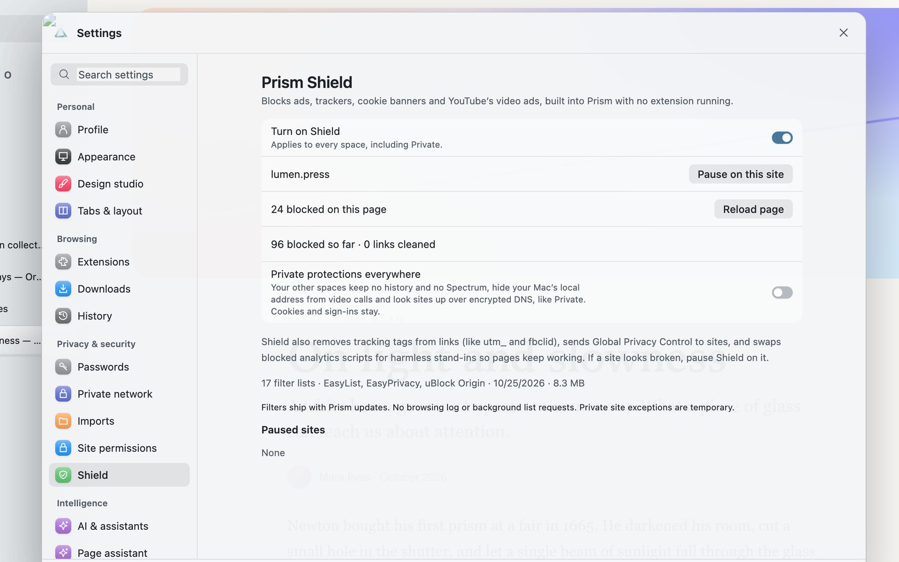
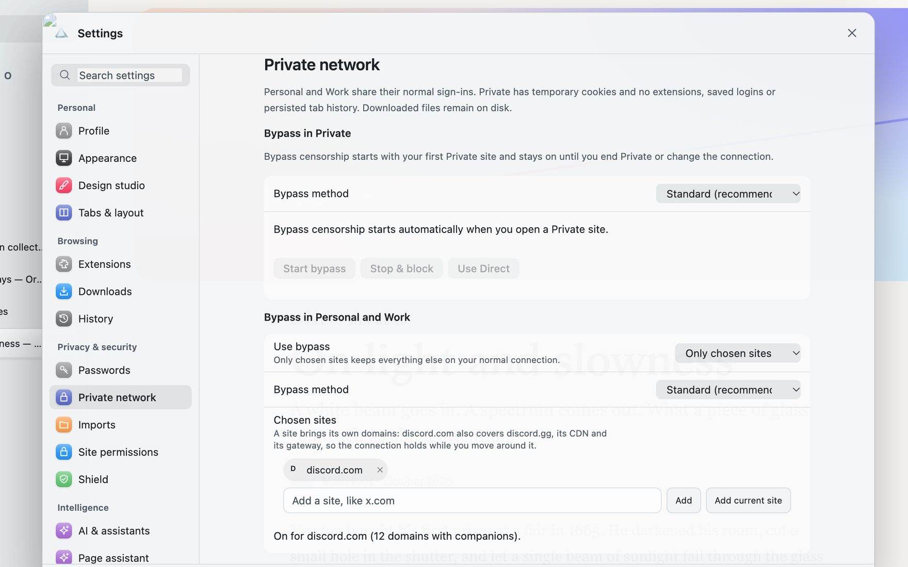
Essay · 9 min read
On light and slowness
MCNSD
File → Add to Dock
ChromeArcSafariBraveEdge
↓
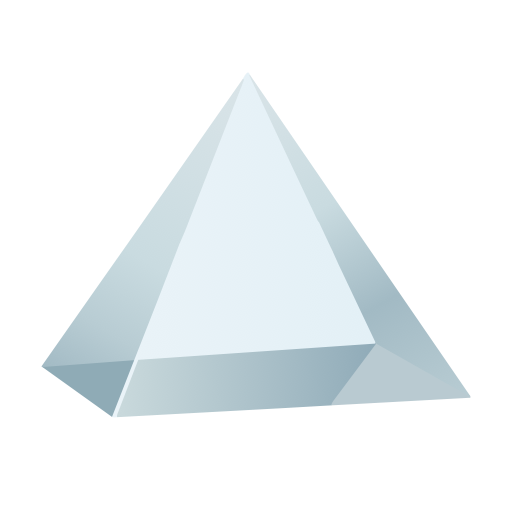
Bookmarks · Passwords · History0.8GB
Ten busy sites, once idle. Down from 2 GB.
⌥⌘A keeps a tab awake.
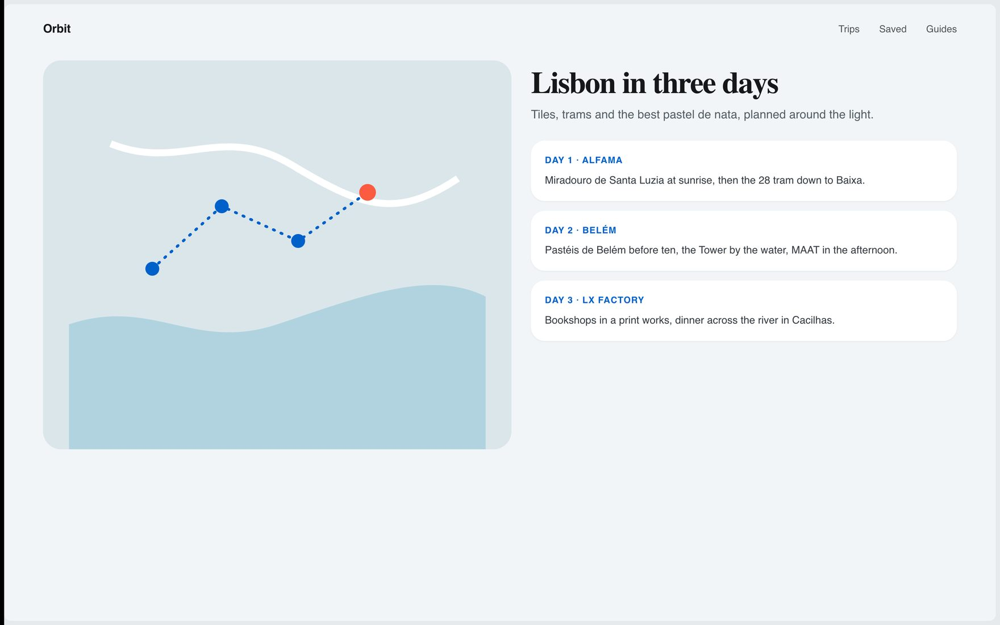
ClearTinted
03 Your day at a glance
Spectrum
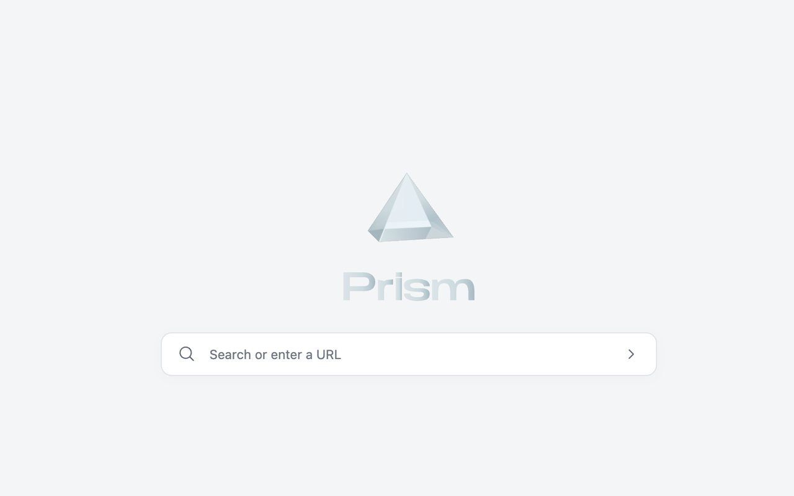
04
No agents. No chatbots.
Just a browser
- Chromium 156
- Chrome extensions
- Touch ID passwords
- Mac & Windows
- No account
05
Follow
the light
Beta, not notarized yet: Control-click Prism and choose Open. GPL-3.0.